Replacement rules
Regular expression conventions
Regular expression examples
Setup
Converting Excel glossaries for use with TermInjector
Adding terms in the SDL Trados Studio editor
Adding and editing terms in a text editor
Advanced settings
TermInjector documentation
Overview
TermInjector is a plugin that modifies the output of a translation memory in the editor during translation. These modifications are based on rules, which can range from simple word substitions to complex formatting operations. The purpose of TermInjector is to save the translator's time by inserting translations for known terms and by performing recurring modifications automatically. Whenever you find yourself doing some mechanical editing task over and over again, you could probably benefit from using TermInjector. TermInjector can for instance insert translations for terms from a glossary and format measurements found in the source segment to the form required by the client (e.g. remove the imperial measurements and convert metric measurements to localized form).
Note: TermInjector does not perform changes in the translation memory. When Studio requests a translation proposal from TermInjector, TermInjector passes the request on to a translation memory. When TermInjector receives the requested translation proposal from the translation memory, it changes it according to the rules it has been given. After that, TermInjector passes the changed translation proposal to Studio. The translation proposals modified by TermInjector never go back to the translation memory, unless the translator decides to update the translation memory with them.
Quickstart
This section demonstrates how to get TermInjector running and how to add rules. The rules are explained in more depth in other parts of this help file. To follow this demonstration, you need to have two things available: a Studio project and a translation memory. Since the point of this exercise is to experiment with TermInjector replacements, choose a project you can modify freely (i.e. preferably an old completed and delivered project, not a project that is going to be delivered to a client). The translation memory should not contain 100 percent matches for the project's files (create an empty translation memory if necessary).
When you have opened the project, select Project Settings from the Project menu in Studio. The Project Settings window opens:
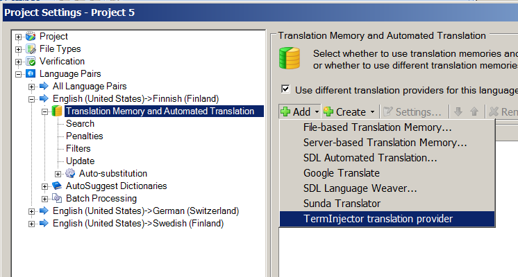Select Language Pairs from the navigation pane on the left, and expand your language pair (English -> Finnish is used in all examples in this help file) in the navigation pane. Select Translation Memory and Automated Translation, and then select Add -> TermInjector translation provider. The TermInjector Options window opens:
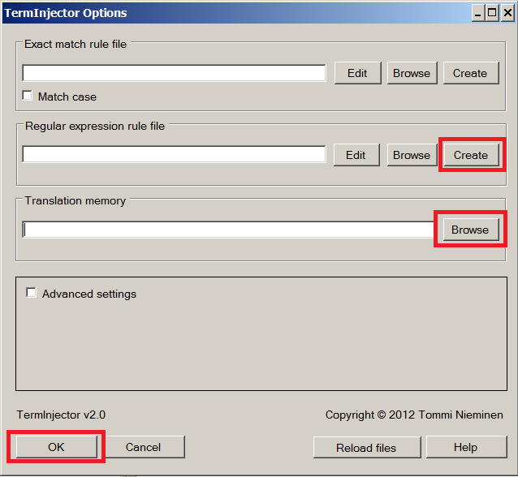Click Create in the Regular expression rule file section and create a new rule file in some suitable location. The rules that you create will be stored in this file. Then click Browse in the Translation memory section and select a translation memory. This will be the translation memory on top of which TermInjector works. Once you have created the rule file and selected the TM, click OK. (Each of the above buttons is marked with a red rectangle in the image). Close the Project Settings by clicking OK.
Next we'll create our first TermInjector rule. We can do this in the target column of the editor, so open a file in the project. Move the cursor to any target segment, and paste the following line:
r\([A-Z]?[a-z]+)([a-z])¤\2\1
Highlight the text and press the concordance search key (which is F3, if Trados keys are used, or F7, if SDLX keys are used):
TermInjector notices that the concordance search text contains a TermInjector rule, so it adds it to the rules in use and saves it in the specified rule file. The rule is now active, so click on some other segment to see its effect:

At first glance it seems that the source segment has been translated to some exotic language, but unfortunately TermInjector is not quite that useful: what the rule has done is take the last letter of each lower case word and move it to the beginning of the word, so "you" becomes "uyo", "find" becomes "dfin" and so on.
This rule is of course useless. It's only used for this demonstration because it will always be applied, as long as there are lower case words in the segment, so its effects will show with any source material. Despite its triviality, the rule still demonstrates how TermInjector can perform complex modifications on segments. TermInjector is useful when the translation process involves patterns, which can be described with rules such as the above. These patterns can be for instance certain formatting conventions, recurring types of modifications made to previous translations, or recurring corrections to previous translations (or output from machine translation systems). You can see concrete examples of replacements performed by TermInjector in the section Regular expression examples (although reading the intervening sections may be necessary to understand the examples fully).
How TermInjector works
TermInjector works in one of two ways, depending on whether the segment has fuzzy matches in the translation memory. The two possible modes are described in the next sections.
New segments
If no match is found in the translation memory, a new translation proposal is constructed: the rules loaded into TermInjector will be applied to the source segment, and approriate parts of the segment will be replaced with the replacements specified in the rules. The translation proposal can then be copied in to the target segment with the Alt+1 shortcut (if default Studio shortcuts are in use). Below is an example of a translation suggestion constructed by TermInjector. The numbers in the source segment have been copied to the target segment and converted to a format which is more verbose and shows the metric measurements before the imperial measurements:
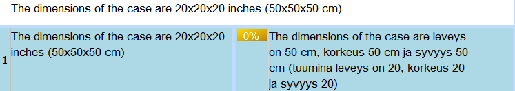Fuzzy segments
If a fuzzy match for a source segment is found in the translation memory, TermInjector uses the rules which apply to fuzzy translation suggestions. If the text specified in the rule is found in the translation suggestion, TermInjector will replace it with the replacement specified in the rule. Below is an example of a recurring source segment type, a phrase in which the only varying element is a name of a file (which won't be localized). TermInjector automatically replaces the old file name in the translation suggestion (oldfilename.gif) with the new file name (newfilename.gif) from the source segment:
Before:

After:
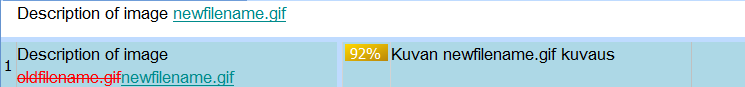
Replacement rules
TermInjector creates and modifies translation suggestions by using a set of replacement rules. There are two kinds of replacement rules, exact match rules and regular expression rules. Both rules can be used to either create a new translation suggestion based on the original source segment or to modify a translation suggestion provided by a translation memory. Rules can have three fields:
- Source field defines an element in the source segment that will be replaced when constructing a new translation proposal.
- Target field defines an element which will replace the Source or the Replaces element.
- Replaces field defines an element of the fuzzy translation proposal's target segment that will be replaced.
Imagine for instance that the client has changed the term "Print diagnostic file" to "Print log file" in all documentation. This term now has to be updated in all segments in which it is used. The old translation used in the TM is "Tulosta vianmääritystiedosto" (Finnish for "Print diagnostic file"), and the new translation is "Tulosta lokitiedosto" (Finnish for "Print log file"). We can do this modification automatically by specifying the new source term ("Print diagnostic file") in the Source field, the new translation ("Tulosta lokitiedosto") in the Target field and the old translation in the Replaces field. Let's assume a rule with these fields has been added to TermInjector. This picture shows the rule in the format it is stored in (red arrows are tabs):
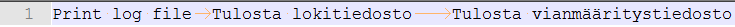Now when you move to a segment where the source contains the term "Print log file", there are two possibilities: the segment may be new, or there may be a fuzzy match in the translation memory. If the segment is new, TermInjector will go through the source segment looking for the value in the Source field. In this case "Print log file" is found, so TermInjector will construct a new translation proposal where "Print log file" has been replaced with the content of the Target field, "Tulosta lokitiedosto" (marked in red in the following image):
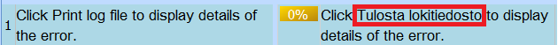Things get interesting if there's a fuzzy match in the memory: TermInjector will still look for the value in the Source field from the source segment, but it will also look for the value of the Replaces field in the target segment of the translation suggestion. If it finds the value, it will replace the old translation with the new translation in the translation suggestion. In the following image you can see the normal output of the translation memory (first match) and the output modified by TermInjector (second match):

As you can see, the output from TermInjector automatically contains the updated translation. (In the above image the same translation memory is used both through TermInjector and as a normal translation memory. You can use this method to compare TermInjector output to normal translation memory output.)
Leaving fields empty
In the example above, all fields of the rule had values. However, it is possible to leave either the Source or the Replaces field undefined. The value of the Source field is primarily used to find the term to replace when constructing new translation suggestions. Leaving the Source field undefined while specifying a value in the the Replaces field means the rule will not be used to construct new translation proposals, but only to modify fuzzy translation proposals. Source field also determines whether the value of the Replaces field will replaced in the translation suggestion: if there is a value in the Source field and this value is not found in the source segment, the translation suggestion will not be modified even if the value of the Replaces field is found in the target segment.
The motivation for this behaviour is to give the translator a possibility to set conditions for the application of rules. This may be necessary if two different terms in the source language have been translated as the same term in the target language. Let's assume for example that "car" is used as a translation for the Finnish words "auto" (meaning an automobile) and "vaunu" (meaning a railroad carriage). You want to change "car" to "carriage" in all segments where "car" is a translation for "vaunu", but not in the segments where it's a translation for "auto". If you define "vaunu" as the value of the Source field, "car" will not be replaced by "carriage" unless the source segment contains "vaunu".
Notice that this method is not foolproof: The source segment may contain the terms "vaunu" and "auto". In that case there are probably two occurrences of "car" in the target segment, and both of them will be changed to "carriage", because the only condition for the application of the rule is that the "vaunu" is present in the source segment. That's why it's always important to check the output of TermInjector.
If the Replaces field is left empty, the rule is not applied for fuzzy translation proposals. This is because TermInjector does not know what to replace without the information in the Replaces field. A rule without a Replaces field is only used for constructing new translation proposals (although it's possible to have the contents of the Target field pasted at the start of the fuzzy translation proposal by enabling the Add new terms to the start of fuzzy match in advanced settings).
Rule files
TermInjector rules are stored in two delimited text files, one for exact match rules and one for regular expression rules. New rules can be added in the Studio editor or by editing the files in a text editor. Each row of the files corresponds to one rule, and each part of a row that is separated from the rest of the row by delimiter characters (usually tabs) corresponds to a field of a rule. Each rule has to have at least two fields, so each row must also have at least one delimiter character (as it divides the row into two parts). If the row has two delimiter characters, the rule has three fields.
The first field is considered the Source field and the second the Target field. If there's a third field, it's considered the Replaces field. Note that fields can be empty: If there's a delimiter character at the start of the row, the Source field is considered empty. If there's a delimiter character at the end of the row, the Replaces field is considered empty.
Sample TermInjector rule file in a text editor (red arrows are tabs):
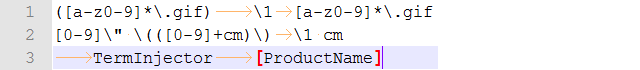Rule on line 1 has all three fields: Source ("([a-z0-9]*\.gif)"), Target ("\1") and Replaces ("[a-z0-9]*\.gif"). This rule replaces an image name in a fuzzy match segment with the image name occurring in the source segment.
Rule on line 2 has two fields: Source ("[0-9]\" \(([0-9]+cm)\)") and Target ("\1 cm"). This rule localizes a measurement given in inches and centimeters, but only in translation proposals constructed for new segments.
Rule on line 3 has two fields, as the Source field is empty: Target ("TermInjector") and Replaces ("[ProductName]"). This rule replaces a placeholder in a translation suggestion with the name relevant to the current translation project (this rule assumes that the memory contains template translations, where varying parts such as product names are represented as placeholders).
Exact match rules
Exact match rules replace parts of translation suggestions that match their Source or Replaces fields exactly (although case sensitivity can be toggled). These rules are useful for replacing terms with their translations. They work especially well with glossaries. If you have a very large glossary available and wish to use it to replace terms in constructed translation suggestions, load the glossary as an exact match rule file. Regular expression rules use more memory, and if you load a glossary as a regular expression rule file, characters which have a special meaning in regular expressions (such as period and question mark) have to be preceded with backslash. For these reasons, it's always preferable to load glossaries as exact match rule files.
Regular expression rules
Regular expression rules are the most useful feature of TermInjector. They can be used to make very complex replacements within new and fuzzy segments. For those who are not familiar with regular expressions, the easiest way to understand them is as constraints that define a set of strings (a string in this context simply means a series of any characters). For instance, the regular expression "orange|apple" defines a set whose members are the strings "orange" and "apple". The "|" character (called the pipe) defines that the expressions on either side of it are alternatives, so it works like an OR operator. In the context of TermInjector, regular expressions are used to see if parts of the source segments or translation suggestions belong to a set of strings that should be changed in the manner defined in the rules.
The following table contains the regular expression conventions used in TermInjector. First column contains the symbol or symbols of the convention. Second column describes the convention. Third column gives more formal examples of the convention, whilst the fourth column contains practical examples (note that the way regular expressions are handled in different programs differ, and in some programs it's necessary to specify more context than in the examples of the fourth column).
Note about escaping: In the table below, characters are often said to be escaped. This means that a special character is used in its literal meaning by adding a backslash ("\") immediately before it. For instance, if the period is preceded by a backslash, the period loses its special meaning (period matches any character) and is treated simply as a period character.
| Convention | Description | Examples | Use case |
|---|---|---|---|
| * (star) | This character specifies that the previous expression (which can be a single character, a range of characters,
or a larger expression contained within parentheses) can occur any amount of times, including zero. Note: * is also commonly used as a wildcard character, but the wildcard * should not be confused the regular expression operator *. Wildcard * can match any string, but the regular expression operator * can not match anything by itself, it's always used to specify how many times some other expression can occur. The same applies to ?, which is also used both in regular expressions and wildcards. |
"a*" = {"","a","aa","aaa","aaaa"...} (Equals the empty string and all other strings which contain only the character "a".) |
Let's say you want to match all occurrences of the compound word "dog house". The word can be written as one word without an intervening space, or with any amount of spaces between the words (extra spaces may occur because of mistakes or because spaces are used as formatting). I'm disregarding the hyphenated version "dog-house" in this example. The following regular expression matches all of these possibilities: dog *house |
| + (plus) | This character specifies that the previous expression can occur any amount of times, but not zero times. | "a+" = {"a","aa","aaa","aaaa"...} (Equals all strings which contain only the character "a".) |
You want to match all occurrences of the user interface term "Print file". There may be any amount of spaces between the words, but there's always at least one space, as the term is not a compound word. The following regular expression matches all possibilities: Print +file |
| ? (question mark) | This character specifies that the previous expression can occur once or zero times. | "a?" = {"","a"} (Equals the empty string and "a".) |
You want to match all occurrences of the words "color" and "colour". The "u" may appear one or zero times, so the following regular expression matches both words: colou?r |
| {min,max} {exact} (wave brackets) |
This expression specifies that the previous expression must occur at least min times and can occur at most max times. If there's no comma inside the brackets, the number specifies the exact amount of times the previous expression can occur. If there is a comma, but the maximum is not specified, the previous expression can occur any amount of times. If the minimum is not specified, the previous expression can occur any number of times from zero to the maximum value. |
{min,max}: "a{1,2}" = {"a","aa"} (Equals the strings containing 1-2 "a" characters.) {exact}: "a{2}" = {"aa"} (Equals the string containing 2 "a" characters.) {,max}: "a{,1}" = {"","a"} (Equals the empty string and "a". Equivalent to "a?".) {min,}: "a{1,}" = {"a","aa","aaa","aaaa"...} (Equals all strings with more than one "a". Equivalent to "a+".) |
You are looking for occurrences of the word "bazaar". However, the word is often misspelled "bazar", so the amount of "a"'s may be one or two. The following regular expression will find both possibilities: baza{1,2}r |
| [ ] (square brackets) | Square brackets are used to define special characters, which match any character that is included within the square brackets. These special characters are called sets. The square brackets may also contain ranges, which specify that all characters from the first character of the range to the last character of the range are included in the set. Valid ranges are a-z, A-Z, 0-9 and their subranges. It's also possible to specify a set which includes all characters except the ones listed between the square brackets. This is done by using the ^ character at the start of the set.
Sets are most often used to define regular expressions that match any word. The regular expression used for this purpose is [A-Za-z][a-z]*, which will match any string composed of letters and which may begin with a capital letter. You can add characters to the set to match words that contain other letters than a-z. For instance, Finnish has the letters "ä" and "ö" in addition to a-z, so all Finnish words match the regular expression [A-ZÄÖa-zäö][a-zäö]* |
"[abcde]" = {"a","b","c","d","e"} (Equals all strings consisting of one character from the set.) "[a-c]" = {"a","b","c"} (Equals all strings consisting of one character from "a" to "c".) "[^a]" = {"b","c","d"...} (Equals all strings consisting of one character other than "a", including numbers and other characters.) |
You need to find all occurrences of the word "leukocyte", which is also spelled "leucocyte". You can do this using a set which contains both "k" and "c". The following regular expression finds both words: leu[ck]ocyte |
| ^ (caret) | Indicates the start of a string. Note that in Studio a segment may contain several starts of strings, depending on the formatting. |
"^[A-Z][a-z]*" = {first words in a string} (Equals all strings that are first words in a string.) |
You want to convert numbered lists to bulleted lists, so you want to find all strings beginning with a number and a period. The following regular expression finds all numbers which start a string and are immediately followed by a period: ^[0-9]+\. |
| $ (dollar sign) | Indicates the end of a string. Note that in Studio a segment may contain several ends of strings, depending on the formatting. |
"[a-z]+$" = {last words in a string} (Equals all strings that are last words in a string.) |
You want to find all strings which only contain one word. To do this, you need to look for strings which only contain letters between the start of the string and the end of the string. The following regular expression finds these string: ^[A-Za-z]+$ |
| . (period) | The period matches any character. |
".*" = {everything} (Equals all strings that can be composed from the alphabet.) "<.*>" = {everything between angle brackets} (Equals all strings contained within angle brackets.) |
Let's say you have a collection of software strings, and you wish to find the ones which start and end with square brackets (they could for instance be placeholders which should be locked before translation). What you are looking for are strings starting with an opening square bracket, continuing with any amount of any characters, and ending in a closing square bracket. The following regular expression will find these strings (note the use of string start and end characters, and the escaping of the square brackets, which is required, because the square brackets here are real square brackets and not special characters): ^\[.*\]$ |
| ( ) (parentheses) | With parentheses groups of expressions can be combined into one expression. When an operator such as + is used after a group within parentheses, the operator applies to the whole group. Parentheses are also used to form capturing groups, which can be used to copy text from the strings that match a regular expression. Capturing groups are described in more detail in section Capturing groups. |
"(ab)+" = {"ab","abab","ababab"...} (Equals all strings consisting of consecutive "ab" strings.) |
You are looking for certain types of codes in some documents. These codes consist of alternating numbers and letters, and they always begin with a number and end in a letter (for instance "1a2g2h4h"). What you are looking for is a series of groups where each group consists of a number and a letter. You can find these codes with the following regular expression: ([0-9][A-Za-z])+ |
| | (pipe) | Pipe specifies that any of the expressions separated by pipes can occur. (Note: Previously the pipe had to be used within parentheses, and alternatives longer than one character also had to be within parentheses. This was non-standard, and it's been changed to match the normal POSIX regular expression conventions.) |
"(a|b){2}" = {"aa","bb","ab","ba"} (Equals all 2-character strings where both characters can be either "a" or "b".) "(a|b|c|d)" = {"a","b","c","d"} (Equals strings "a", "b", "c" and "d", equivalent to [abcd].) "(T|t)he" = {"the","The"} (Equals both capitalized and lower case "the".) "(of|from)" = {"of","from"} (Equals both "of" and "from".) |
You're reviewing a translation and discover that two near-synonyms have been used as a translation for the same word (for instance both "desk" and "table" have been used as a translation for a term, which has a wider meaning of elevated surface). You want to find all occurrences of both "desk" and "table" so that you can see which is more appropriate. The following regular expression matches both "desk" and "table": (desk|table) |
| \ (backslash) | Backslash is the escape character. If you wish to use any special characters in their literal meaning, they must be preceded with \. |
"[a-z]*\.[a-z]*" = {words containing periods} (Equals words containing a period either at the start, middle or end.) "\([a-z]*\)" = {words within parentheses} (Equals all words within parentheses.) |
You wish to find all strings ending with question mark. Question mark has a special meaning in regular expressions, so it needs to be escaped. Use the following regular expression: .*\? |
Note about regular expression handling in TermInjector:
In TermInjector, regular expressions are applied to every part of the source segment located between two word separator characters (these characters are defined in advanced settings, and by default they include for instance the period, space and the comma). This means that the context of the regular expression has to be specified up to the nearest word separator character. For instance, if you wish to replace "or" with "our" in the words "honor" and "color", having "or" in the Replaces field is not enough: the context must be specified up to the start of the word, so the value of the Replaces field should be something like "((hon)|(col))or". Because of the way TermInjector handles regular expressions, you should also try to avoid using regular expressions that can match empty strings (such as "[0-9]*"), as it can lead the replacement rule being applied between two boundary characters.
Capturing groups
Capturing groups are a feature that increases the usefulness of regular expressions dramatically. Capturing groups can be used to record the strings that match certain parts of the regular expression. These matching strings can then be used to compose a replacement for the string that the entire regular expression matched. A good example of this are measurement conversions. We can use regular expressions matching digit groups (such as [0-9]+) to capture the numbers from the source string and then place these numbers in the correct formatting using the special characters of the capturing groups.
Let's say that the source measurement is "40x30x20", and the localized formatting requires that the dimensions are spelled out, as in "Width 40, height 30, depth 20". We can use the following regular expression to capture the numbers from the source: "([0-9]+)x([0-9]+)x([0-9]+)". Now we have three capturing groups that we can order as we please in the replacement string. Special character "\1" always refers to the first capturing group, which in this case matches the string "40". Likewise, "\2" refers to the second capturing group, which matches the string "30". Finally, "\3" refers to the third capturing group, which matches the string "20". We can use these special characters to form a template, which produces different replacement strings from different source strings. If our template is "Width \1, height \2, depth \3", the replacement string that is produced in this case is "Width 40, height 30, depth 20". We could also choose to order the dimensions differently, for instance by moving the height first: "Height \2, width \1, depth \3", in which case the replacement string would be "Height 30, width 40, depth 20".
Note: Only parentheses that are not inside other parentheses form capturing groups. For instance, in the regular expression "([a-z]+(1[0-9])*)", the expression "(1[0-9])" is not a capturing group, even though it is in parentheses, as it's inside another capturing group.
Regular Expression examples
Here are examples of regular expression rules, which describe typical use cases:
Example 1
Scenario: The phrase "Picture of xxxx.gif" (where "xxxx" is some string consisting of lower case letters and numbers) occurs often in the translation. The translator has to manually copy the file name from the source segment to the fuzzy translation proposal.
TermInjector rule:
| Source | Target | Replaces |
|---|---|---|
| ([a-z0-9]*\.gif) | \1 | [a-z0-9]*\.gif |
Explanation:
In the Source field, a capturing group is created by using parentheses. Inside the group the square bracket notation specifies two ranges: a-z and 0-9. The star indicates that there can be any amount of characters from the specified ranges. The expression "\.gif" established the context in which the characters from the ranges can occur, i.e. only before the .gif file extension (period must be escaped i.e. preceded by backslash, because it has a special meaning in regular expressions).
In the Target field, only the special character referring to the first capturing group, "\1", is specified. This special character will be replaced by the string found in the source segment which matches the expression within parentheses in the Source field (in the picture that string is "newfilename.gif").
The contents of the Replaces field are the same as the contents of the Source field, but the parentheses are not needed, as it's not necessary to copy text from the translation suggestion. This field specifies that a string of same type as the one in the Source field will be replaced by the content of the Target field in the translation suggestion.
Without TermInjector:
With TermInjector:
Example 2
Scenario: Measurements of the form "20x20x20 inches (50x50x50 cm)" (the numbers vary) occur often in the translation. The client has a specific format into which these measurements have to be converted. The translator has to perform this conversion manually.
TermInjector rule:
| Source | Target | Replaces |
|---|---|---|
| ([0-9]+)x([0-9]+)x([0-9]+) inches \(([0-9]+)x([0-9]+)x([0-9]+) cm\) | leveys on \4 cm, korkeus \5 cm ja syvyys \6 cm (tuumina leveys on \1, korkeus \2 ja syvyys \3) | leveys on [0-9]+ cm, korkeus [0-9]+ cm ja syvyys [0-9]+ cm \(tuumina leveys on [0-9]+, korkeus [0-9]+ ja syvyys [0-9]+\) |
Explanation:
In the Source field, six capturing groups are created by using parentheses. The first three groups capture the inch measurements, and the last three groups the centimeter measurements. The "x" characters between measurements, the "inches" string and the escaped parentheses around the centimeter measurements define the context where these measurements will be captured.
In the Target field there's the translated and localized template of the measurements. The centimeter capturing groups are moved up, and the inch capturing groups are moved behind them inside parentheses.
The Replaces field contains the translated and localized template of the measurements with approriate expressions used for the number slots.
Result of rule application in a new segment:
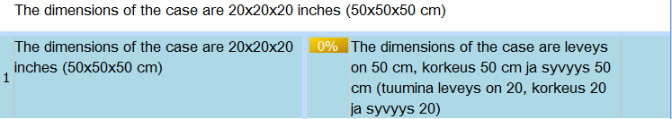Result of rule application in a fuzzy translation proposal (note that the dimensions were different in the old translation):
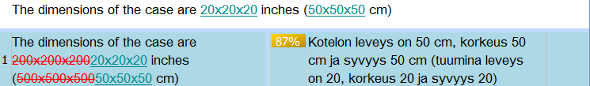Example 3
Scenario: A client has decided to change the time zone abbreviation "GMT" to "UTC" in strings of the type "GMT+1 Paris", where the geographic location may need to be translated. The translator has to manually update the terms in the fuzzy translation proposals.
TermInjector rule:
| Source | Target | Replaces |
|---|---|---|
| UTC\+([0-9]+) | UTC+\1 | GMT\+\1 |
Explanation:
In the Source field, a capturing group is used to copy the time difference from UTC time. The "UTC\+" string establishes the context.
In the Target field the capturing group is copied after the string "UTC+".
The Replaces field specifies that the contents of the Target field will replace the old "GMT" strings, which are otherwise identical.
The capturing group "\1" in the Replaces field ensures that the Target string replaces only strings that have the same numerical value as the string in the source segment. For instance, let's say the source segment contains the time strings "UTC+1" and "UTC+5" and the fuzzy translation proposal contains the time strings "GMT+1" and "GMT+5". The Source value matches both of the source segment time strings, so the rule will be applied twice in the segment. In the first application, the matching part is "UTC+1", so the content of the Replaces field becomes "GMT\+1". In the second application, the matching part is "UTC+5", so the content of the Replaces field becomes "GMT\+5". This means that "GMT+1" will be replaced with "UTC+1" and "GMT+5" with "UTC+5". If capturing groups were not used and the content of the Replaces field was simply "GMT\+[0-9]", the "GMT+5" string could be replaced with "UTC+1" or the "GMT+1" string with "UTC+5".
Result of rule application:
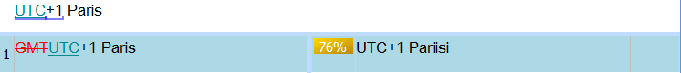
Setup
-
Select Project Settings from the Project menu in Studio. Select Language Pairs from the navigation pane on the left, and expand your language pair in the navigation pane. Select Translation Memory and Automated Translation. Select Add -> TermInjector translation provider. The TermInjector Options window opens.
-
Select or create rule files.
Selecting existing rule files: Click the Browse button in the Exact match rule file or Regular expression rule file section. The rule files are delimited files which should have two or three fields (i.e. one or two delimiter characters) per row. The default delimiter is Tab, but this can be changed in the advanced settings.
Important: The file encoding of the rule files should be UTF-8. You can check the file encoding by loading the file in Notepad and selecting Save As. The encoding is shown at the bottom of the Save As window. If the encoding is not UTF-8, select UTF-8 from the list and save the file again.
Creating new rule files: Click the Create button in the Exact match rule file or Regular expression rule file section. Enter the new file's name in the dialog window. File extension does not need to be specified, as .txt extension will always be used.
It's possible to not specify one or both of the rule files. In that case no file is loaded, but new rules can still still be added and used in the editor. However, it will not be possible to save a new rule if the related rule file has not been specified. For this reason it's always better to use a rule file, even if it's empty.
The Match case checkbox in the Exact match rule file section can be used to specify whether the character case of the term is considered in exact match rules. It's usually best to leave this checkbox unchecked.
-
Select the translation memory by clicking the Browse button in the Translation memory section.
Important: The selected translation memory must support the language direction of the file to be translated. If that's not the case, TermInjector will not function (an error message will also be shown).
-
Click the OK button in the TermInjector Options window.
-
Click the OK button in the Project Settings window.
Converting Excel glossaries for use with TermInjector
Exact match rule files can be easily created from Excel glossaries by selecting the source and target columns simultaneously in Excel, copying them into Notepad, and saving the file in Notepad. For this to work, the target column should be immediately on the right side of the source column. If there are other columns between the source and target columns or the target column is on the left side of the source column, copy the columns into an empty Excel worksheet in the correct order and then copy them into Notepad.
Adding terms in the SDL Trados Studio editor
You can add terms to either of the rule files in the target segment part of the editor. Type the two or three fields of the rule separated by term addition characters (¤ by default). If you wish to add the rule to the regular expression rules, type "r\" in front of the fields. When you have typed the fields, highlight the whole string (optional "r\" prefix, fields and separator characters) and press the concordance search key (F7 by default). If the regular expression rule is invalid, a window describing the error will open.
Example 1 (adding an exact match rule): The file contains several occurrences of the term Print file, and you wish to add its translation (e.g. Tulosta tiedosto in Finnish) to the glossary. You can do this in the following way:
- Move to a segment which contains the source term:
- Type the translation next to the source term in the target segment:
- Highlight Print file¤Tulosta tiedosto:
- Press the concordance search key (F7 by in the SDLX profile, F3 in the SDL Trados profile). The translation for Print file is added to the glossary (the source term and the separator character are no longer needed, so remember to remove them from the target segment before confirming it).
- The next time you enter a segment where the term occurs, the term's translation will be automatically inserted into the translation proposal:
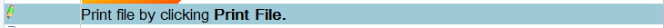
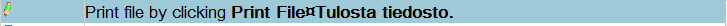
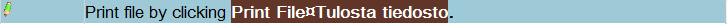
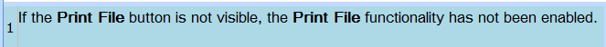
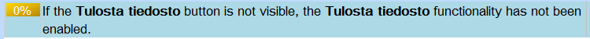
Example 2 (adding a regular expression rule with Replaces field): You are using a translation memory produced by a machine translation system. The system systematically translates the term "notepad" by the localized name of the software product Notepad, even though the localized name of Notepad is an incorrect translation for "notepad" in many contexts. You wish to use TermInjector to change the term automatically:
- Add the string "r\¤vihko\1¤Muistio([a-z]*)" to the target segment, highlight it and press the concordance search key:
- The rule added in the previous step will replace any word beginning with "Muistio" with "vihko" (the correct translation in this context) in the translation suggestion. The rule will also copy the ending of the word, so the case of the noun will be preserved. When you move to some other segment containing the term "notepad" in the source, the rule is applied:
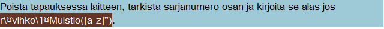
Without TermInjector:
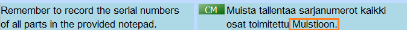With TermInjector:
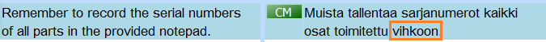
Adding and editing terms in a text editor
The most convenient method of adding rules is using a text editor, such as Notepad++. Text editor is also the only way to edit or remove rules. You can open the rule files in the computer's default text editor by clicking the Edit button next to the file name in the TermInjector settings. Once the editor opens, you can add rules by adding rows with at least two fields, delete rules by deleting rows, and edit rules by making changes in the fields of the rows. Remember to save the file after you have modified it.
Note that after the files have been modified in an editor, the changed rules won't be used automatically in Studio. If you have edited a rule file, you can activate the rules in Studio by clicking the Reload files button in TermInjector settings. Restarting Studio or TermInjector will also activate the edited rules.
Advanced settings
Inject terms into 100 percent matches: If this is selected, TermInjector rules are also applied to 100 percent matches. This can be useful if incorrect terms are used in the translation memory (for instance if the TM is of low quality or produced by a machine translation system). Off by default.
Term addition separator: This is the character that is used in adding terms to the glossary. It should ideally be a character that does not usually appear in files and that is easily typed on the keyboard (the default is the currency symbol ¤, but some other character may be more convenient in other keyboard layouts).
Add new terms to the start of fuzzy match: If this setting is enabled, TermInjector will compare the current source segment and the source segment of the translation suggestion. If terms specified in the Source fields of TermInjector rules are present in the current source segment but missing from the source segment of the translation suggestion, TermInjector will add the Target fields of these rules to the start of the translation proposal. This way the translations of new terms are easily available for the translator. This setting is off by default.
Constructed segment match percentage: The value of this field is the match percentage that is used when TermInjector constructs translation proposals for segments that have no translation memory matches. The reason this setting is adjustable is that some Studio functionalities require a certain minimum match percentage. Default is 0.
Word boundary characters: These are the characters that determine how segments will be split during term search. For instance, if the hyphen is included in this field and the source segment is "boundary-character", TermInjector will search for "boundary", "boundary-character" and "character". If hyphen is not included here, only "boundary-character" will be searched for. The field contains the following characters (and the space character) by default: .,!?"'-;:
Delimiter character: This is the delimiter character used in the glossary file. The list contains the common delimiters.